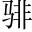

南昌故郡，洪都新府江西南昌府號為洪都。。星分翼軫翼、軫，二星，在楚之分野。，地接衡廬衡山峙立於西南，廬山近聯於北境。。襟三江而帶五湖三江，荊江在荊州，淞江在蘇州，浙江在杭州。此據其上，如衣之襟焉。五湖，大湖在蘇州，鄱陽湖在饒州，青草湖在嶽州。丹陽湖在潤州，洞庭湖在鄂州。此據其中，如帶之束焉。，控蠻荊而引甌越荊楚本南蠻之區，此則控扼之。閩越連東甌之境，此則接引之。○首敘地形之雄。。物華天寶物之光華，乃天之寶。，龍光射牛鬥之墟豐城有二劍，曰干將，曰莫邪。其龍文光彩，直上射牛鬥。；人傑地靈人之英傑，由地之靈。，徐孺下陳蕃之榻徐穉，字孺子，洪州高士也。陳蕃為豫章太守，特設一榻以待之。○次序人物之異。。雄州霧列雄州，謂大郡。如霧之浮列於上。○承「星分」四句。，俊彩星馳俊彩，謂人物，如星之奔馳於前。○承「物華」四句。。臺隍枕去聲。夷夏之交臺，亭臺。隍，城下。以首據物曰枕。夷，謂正南荊楚之地。夏，謂東南揚州之域。○再承「星分」四句。，賓主盡東南之美時宴於此閣之賓主，盡東南人物之美。○再承「物華」四句，隨起下文。。都督閻公之雅望，棨戟遙臨時閻伯嶼為洪州牧，即都督也。棨戟，有衣之戟。遙遠而臨於洪州。○主。；宇文新州之懿範，襜諂平聲。帷暫駐宇文鈞，新除灃州牧，道經於此。襜帷，蓋坐車馬者，蔽前曰襜，在旁曰帷。○賓。。十旬休暇，勝友如雲以賓主交歡日久言。；千里逢迎，高朋滿座以賓朋來自遠方言。。騰蛟起鳳，孟學士之詞宗；紫電清霜，王將軍之武庫蛟氣之騰，光焰奪目；鳳毛之起，文彩耀空。喻才華也。詞宗，謂詞章之宗。光輝之發，閃如紫電；浩氣之凝，凜若清霜。喻節操也。武庫，言無所不有。孟學士、王將軍，是會中顯客。。家君作宰，路出名區；童子何知，躬逢勝餞勃父名福畤，為交阯令。勃往省焉，道經洪州。童子，勃自稱。○此段述賓主之美。。
時維九月，序屬三秋。潦水盡而寒潭清，煙光凝而暮山紫只二句，已寫盡九月之景。。儼驂於上路儼，望也。驂，訪風景於崇阿，馬行不止也。行馬於道路之上，謂賓客所來之途也。；臨帝子之長洲崇阿，高陵也。採訪風景於高陵，謂沿途攬勝也。，得仙人之舊館帝子，謂滕王也。建閣長洲之上。臨，謂至其所也。。層巒聳翠，上出重霄仙人舊館，稱膝王閣也。得，謂登其上也。○此段敘到閣之由。；飛閣流丹，下臨無地閣之當山，但見層疊峰巒聳其翠色，上出於重重霄漢之上。。鶴汀閣之映水，飛舞莫定，影若流丹，下臨於江上無地之處。鳧渚，窮島嶼廳。之縈迴序。；桂殿蘭宮，列岡巒之體勢汀，水際平地。渚，小洲也。海中山曰島。山在水曰嶼。鶴聚於汀，鳧宿於渚，已窮盡水中島嶼縈曲迴環之處。。披繡闥，俯雕甍江神祠宇，以桂為殿庭，以蘭為宮闕。前後分列，如岡巒之體勢。○此段言閣在山水之間，乃近景也。，山原曠其盈視萌。○披，開也。門屏曰闥，屋棟曰甍。，川澤盱山、原之深曠者，足以極吾之所視。其駭矚籲。。閭閻撲地，鐘鳴鼎食之家竹。○盱，張目也。矚，視之甚也。川澤如目之張，而有以駭吾之所矚。；舸閭閻，裡中門也。撲地，謂排列於地也。鳴鐘列鼎而食，盡大家也。艦歌。迷津，青雀黃龍之軸鹹上聲。。虹銷雨霽，彩徹雲衢舸，大船。艦，戰船。迷塞水津，皆彩畫青雀、黃龍於船軸之上。。落霞與孤鶩虹氣已銷，雨開新霽，而光彩映徹於雲衢之間。齊飛，秋水共長天一色務。。漁舟唱晚，響窮彭蠡之濱；雁陣驚寒，聲斷衡陽之浦落霞自天而下，孤鶩自下而上，故曰齊飛。秋水碧而連天，長天空而映水，故曰一色。○警句。自使伯嶼心服。。
遙吟俯暢，逸興遄飛遄，速也。。爽籟賴。發而清風生凡孔竅機括皆曰籟。秋晚之爽氣，發於萬籟之鳴，故清風颯颯而生。，纖歌凝而白雲遏纖，細也。女樂之細歌，凝止於侍宴之側，而白雲為之遏留。。睢園綠竹，氣凌彭澤之樽意其用《淇澳》綠竹事，以嘉有德。陶淵明為彭澤令，嘗置酒召客。此美座中之有德而善飲者。；鄴水朱華，光照臨川之筆鄴，曹魏所興之地。曹植詩：「朱華冒綠池。」臨川，今撫州。王羲之善書，嘗為臨川內史。此美座中之有文而善書者。。四美具良辰、美景、賞心、樂事。，二難並賢主、嘉賓。○此段敘宴會之人歌、飲、文詞，無所不妙。。窮睇第。眄勉。於中天睇，小視。眄，邪視。窮極觀覽於中天之際。○起「天高地迥」句。，極娛遊於暇日極盡娛樂嬉遊於閒暇之日。○起「興盡悲來」句。。天高地迥，覺宇宙之無窮迥，寥遠也。○二句收拾上文勝景。；興盡悲來，識盈虛之有數二句引起下文命運。。望長安於日下，指吳會於雲間望天子長安之處於日下，指蘇州吳會之在於雲間。。地勢極而南溟深，天柱高而北辰遠地缺東南，勢極於南，而南溟最深。天傾西北，柱高於北，而北辰亦遠。○四句起「關山」四句。關山難越，誰悲失路之人？萍水相逢，盡是他鄉之客失路，喻不得志也。萍，浮生水上，隨風漂流，故人稱邂逅相遇曰萍水相逢。○四句言在會者多屬他鄉失志之人，能不感慨系之？下乃承此意細寫之。。懷帝閽而不見，奉宣室以何年懷思君門，而不可得見。欲如賈誼奉宣室之問，不知又在何年。？
嗚呼！時運不齊，命途多舛。馮唐易老馮唐，漢人，白首為郎。文帝輦過郎署，與論將帥，拜為車騎都尉。，李廣難封漢李廣，武帝時為右北平太守，匈奴號為飛虎將軍。以數奇，不得封侯。。屈賈誼於長沙，非無聖主絳、灌屈賈誼，謫為長沙王太傅，非無漢文帝之聖主。；竄梁鴻於海曲，豈乏明時佞臣毀梁鴻，逐之於北海，豈無魏武帝之明時？○此段言懷才而際時者，皆失志如此。後之悲失志者，亦可因之以自慰。？所賴君子安貧，達人知命。老當益壯，寧知白首之心；窮且益堅，不墜青雲之志。酌貪泉而覺爽，處涸轍以猶歡廣州一水，謂之貪泉。飲此水者，廉士亦貪。吳隱之詩：「試使夷齊飲，終當不易心。」身當困窮，如魚處涸轍之內，而猶歡悅。。北海雖賒奢。，扶搖可接賒，遠也。扶搖，風勢也。《莊子》：北海有魚，其名為鯤。化而為鵬。摶扶搖而上者九萬里。；東隅已逝，桑榆非晚東隅，日出處。桑榆，謂晚也。漢光武勞馮異詔：「始雖垂翅回溪，終能奮翼澠池。可謂失之東隅，收之桑榆。」。孟嘗高潔，空懷報國之心孟嘗，字伯周，漢順帝時為合浦太守。性行高潔，不見升擢，故云空懷。；阮籍猖狂，豈效窮途之哭。晉阮籍率意獨駕，車跡所窮，輒痛哭而返，是猖狂也，吾輩豈可效之？○此段言士雖遭時命之窮，正當因之以自勵。
勃，三尺微命，一介書生方說到自己。。無路請纓，等終軍之弱冠去聲。○《曲禮》:「二十曰弱冠。」南越與漢和親，終軍年二十餘，自願受長纓，必羈南越王而致之闕下。勃謂無路請纓於朝，比終軍弱冠之年。；有懷投筆，慕宗愨之長風漢班超嘗為人書記，意不屑，投筆有封侯萬里之志。宋宗愨，叔父問所志，愨曰：「願乘長風破萬里浪。」後果為將軍。勃謂有志於投筆，景慕宗愨破浪之長風。○自負不凡。。舍簪笏於百齡，奉晨昏於萬里捨去簪笏於百年富貴之途，奉父晨昏定省之禮於萬里之外。言往交阯省父。。非謝家之寶樹謝玄為叔父安所器，曰：「子弟亦何預人事，而欲使其佳？」玄曰：「如芝蘭玉樹，欲使生於庭階耳。」，接孟氏之芳鄰孟母三遷，為子擇鄰。言己幸與諸賢相接。。他日趨庭，叨陪鯉對異日到交阯侍受父教，叨陪孔鯉趨庭之對。；今晨捧袂，喜託龍門漢李膺以聲名自高，士有被其容接者，名為登龍門。勃謂今日捧袂而進，喜託姓名於閻公之門，亦若龍門也。。楊意不逢，撫凌雲而自惜楊得意曾薦司馬相如，後相如遂顯。勃言不逢楊得意之薦，但誦相如凌雲之賦，而自惜其不遇耳。；鍾期既遇，奏流水以何慚伯牙鼓琴，志在流水。鍾子期曰：「洋洋若江河。」勃謂既遇閻公之知音，即呈所為文，又何愧焉？○此段自敘以省父過此，得與宴會，不敢辭作序之意。？
嗚呼！勝地不常，盛筵難再。蘭亭已矣蘭亭，王羲之宴集之地，今已往矣。，梓澤丘墟梓澤，石崇金谷園。今已荒廢而為丘墟。。臨別贈言，幸承恩於偉餞序系勃作，故曰臨別贈言。既承閻公之恩於偉餞矣。；登高作賦，是所望於群公登高閣而作賦，勃誠不能，是有望於在會之群公也。○勃居末座，而僭作序，故以遜詞作結。得體。。敢竭鄙誠，恭疏短引結作序。。一言均賦，四韻俱成勃先申一言，以均此意而賦之，而八句四韻俱成矣。○起作詩。：
滕王高閣臨江渚閣聳而依江。，佩玉鳴鸞罷歌舞宴罷而佩玉、鳴鸞之歌舞亦罷。。畫棟朝飛南浦雲朝看畫棟，儼若飛南浦之雲。，珠簾暮卷西山雨暮收朱簾，宛若卷西山之雨。。閒雲潭影日悠悠雲映深潭，日悠悠而自在。，物換星移幾度秋物象之改換，星宿之推移，此閣至今，凡幾度秋！。閣中帝子今何在傷今思古。？檻外長江空自流傷其物是而人非也。○序詞藻麗，詩意淡遠，非是詩不能稱是序。。
唐高祖子元嬰為洪州刺史，建此閣，後封滕王，故曰滕王閣。咸亨二年，閻伯嶼為洪州牧，重修。九月九日，宴賓僚於閣。欲誇其婿吳子幸才，令宿構序。時王勃省父，次馬當，去南昌七百里。夢水神告曰：「助風一帆。」達旦，遂抵南昌與宴。閻請眾賓序，至勃，不辭。閻恚甚，密令吏得句即報。至「落霞」二句，嘆曰：「此天才也。」想其當日對客揮毫，珍詞繡句層見疊出，洵是奇才。
二〇二二年五月二十五日 二校完成